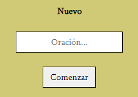
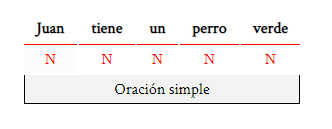
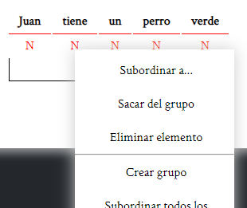
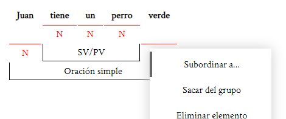

Escribir una nueva oración
Para comenzar selecciona la pestaña "Archivo" y escribe tu oración en este campo de texto:

Comenzar a editar
Lemon Ink no puede analizar la oración por ti, así que el primer paso es tener claro cómo estructurarla (sujeto, predicado, nexos, ...).

Una vez bien pensado puedes comenzar a crear grupos haciendo click derecho sobre un elemento y después selecciona "Crear grupo".

Después de crear el grupo, puedes subordinar los elementos uno por uno (haciendo click en "Subordinar a..." y después seleccionando el grupo). O puedes subordinar todos los elementos anteriores y/o posteriores de golpe.

Para aprender más vea Editar